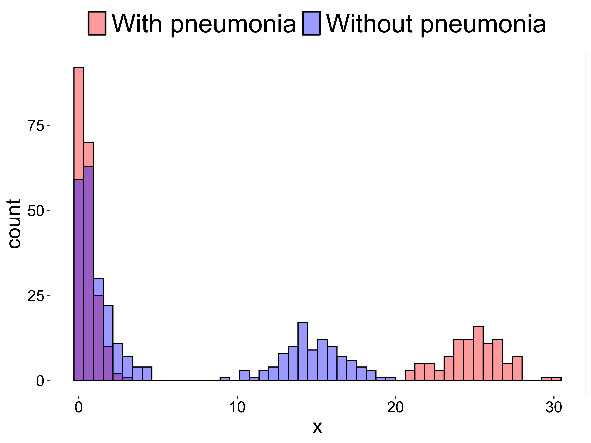
1) Define the question and hypotheses about the population
2) Choose significance level
3) Choose the test
4) Collect the data
5) Run the test
6) Interpret the result
A statistical hypothesis is a claim about population we can test using sample data.
Null hypothesis (\(H_0\)) – “sceptical hypothesis” about no effect
Alternative hypothesis (\(H_A\)) – usually the hypothesis we want to be true
1) Define the question and hypotheses
2) Choose significance level
3) Choose the test
4) Collect the data
5) Run the test
6) Interpret the result
| \(H_0\) is true | \(H_0\) is false | |
|---|---|---|
| Reject \(H_0\) | Type I error | Correct rejection |
| Fail to reject \(H_0\) | Correct decision | Type II error |
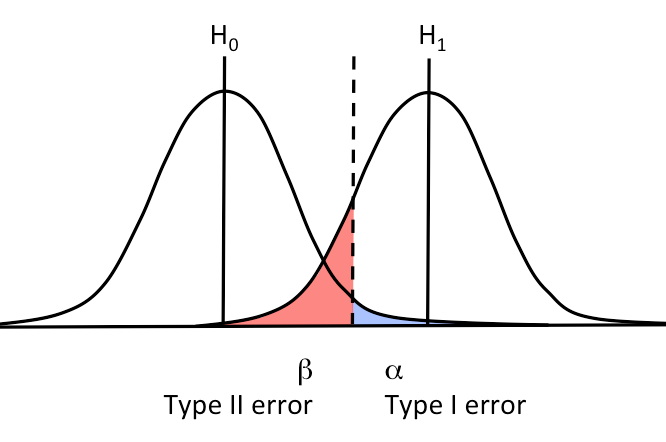
The dashed line is the decision cutoff. The blue region shows false alarms. The pink region shows missed effects.
\(\alpha\) is the significance level.
Power is the chance of detecting a specified real effect, \(1-\beta\).
If light actually changes average plant height, would our experiment usually show that change?
Power depends on:
sample size
how large the true difference is
how much values vary
chosen \(\alpha\)
\(\alpha = 0.05\) is a convention.
You can choose any level between 0 and 1, in advance, based on the study and the consequences of a false positive.
etc.
1) Define the question and hypotheses
2) Choose significance level
3) Choose the test
4) Collect the data
5) Run the test
6) Interpret the result
Do two groups differ in average height?
In both cases we ask about averages, but the study design tells us whether to compare groups or analyse changes within plants.
Assumptions are conditions under which we can trust the test’s stated properties, such as its Type I error rate.
If a condition fails, the actual error rate may differ from the chosen \(\alpha\).
| Condition | Example |
|---|---|
| Normality | Paired t-test: differences within pairs |
| Equal variances | Pooled t-test |
| Independence | Two-sample t-test: separate plants |
| Outcome type | t-test: measurements · χ²: counts |
A long hospital stay is > 15 days.
\(\Rightarrow \chi^2\) test

\(H_0\): the two independent groups have the same score distribution.
\(\Rightarrow\) Mann-Whitney test
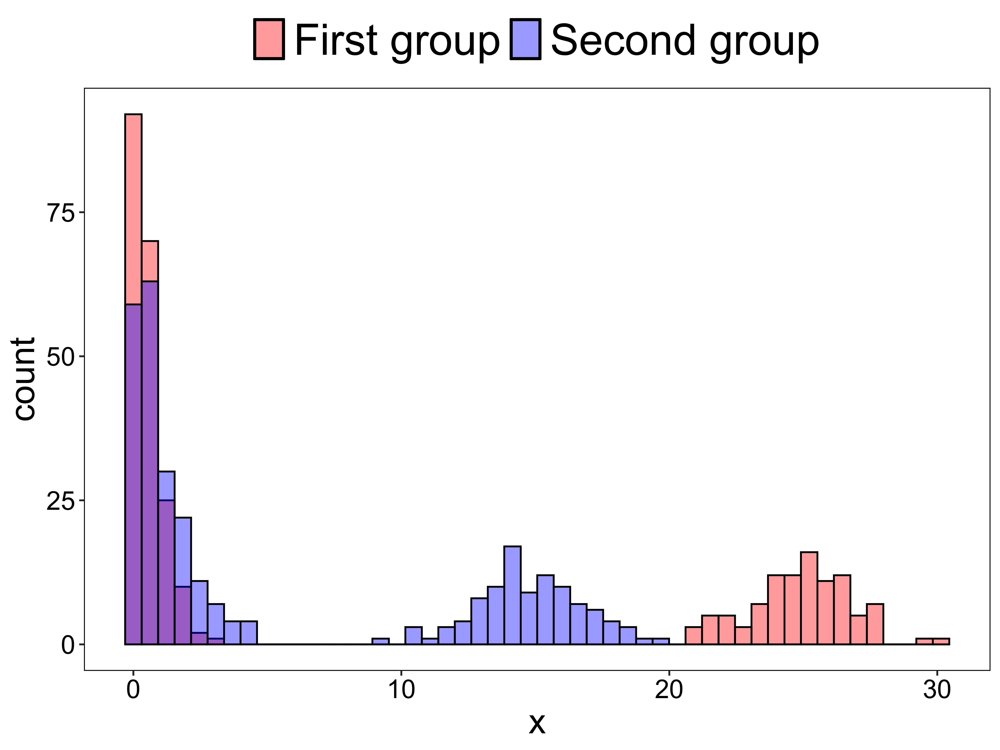
1) Define the question and hypotheses
2) Choose significance level
3) Choose the test
4) Collect the data
5) Run the test
6) Interpret the result
1) Define the question and hypotheses
2) Choose significance level
3) Choose the test
4) Collect the data
5) Run the test
6) Interpret the result
Calculate a test statistic from the data.
Each test specifies how to turn the sample into a number.
Compare it with its distribution under \(H_0\).
In many parametric tests this is a theoretical distribution, such as Student’s t.
Calculate the p-value.
Find the probability of a statistic at least as extreme as the observed one under \(H_0\), in the direction or directions specified by the alternative.
The p-value helps answer a question about the statistic under \(H_0\). Report the estimated effect separately.
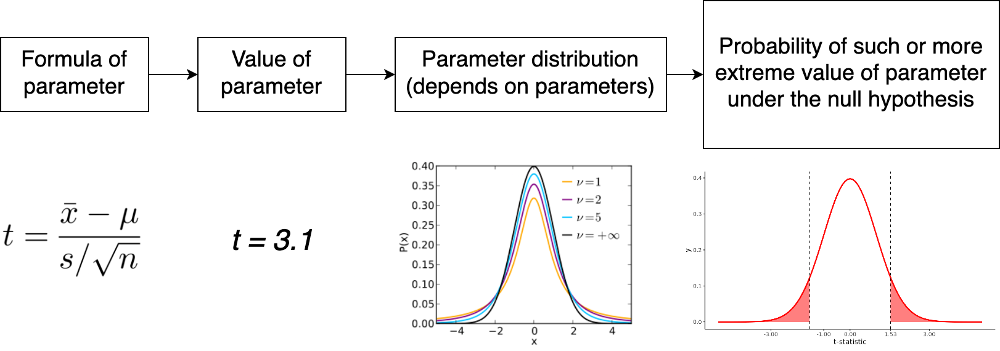
Read “parameter” in the diagram as test statistic. Each panel illustrates a step.
A reference distribution can have parameters of its own.
Degrees of freedom (df) change the shape of a t-distribution. They can depend on the sample size and how the statistic is calculated.
A one-sample t-test with 20 observations has 19 degrees of freedom.
Other reference distributions can have parameters such as a mean and standard deviation, or a shape and rate.
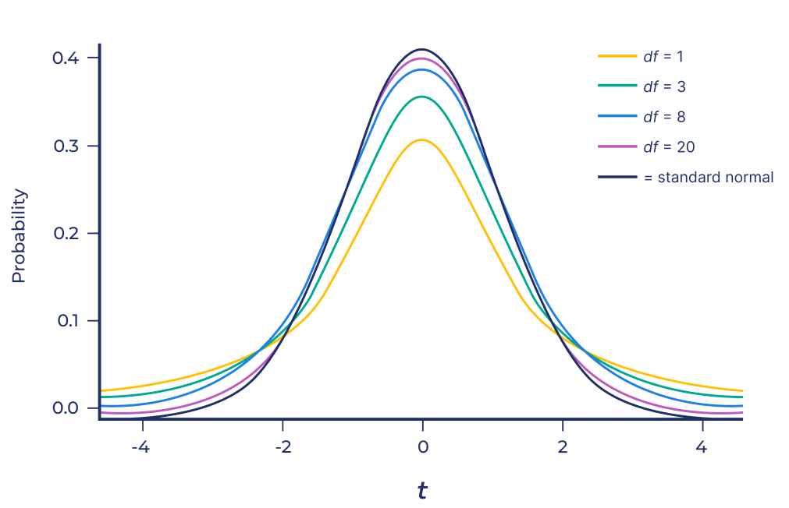
If \(H_0\) is true, how often would the chosen test give a statistic at least as extreme as the one we calculated?
The answer comes from the tail area of the reference distribution.
Then compare \(p\) with the chosen \(\alpha\).
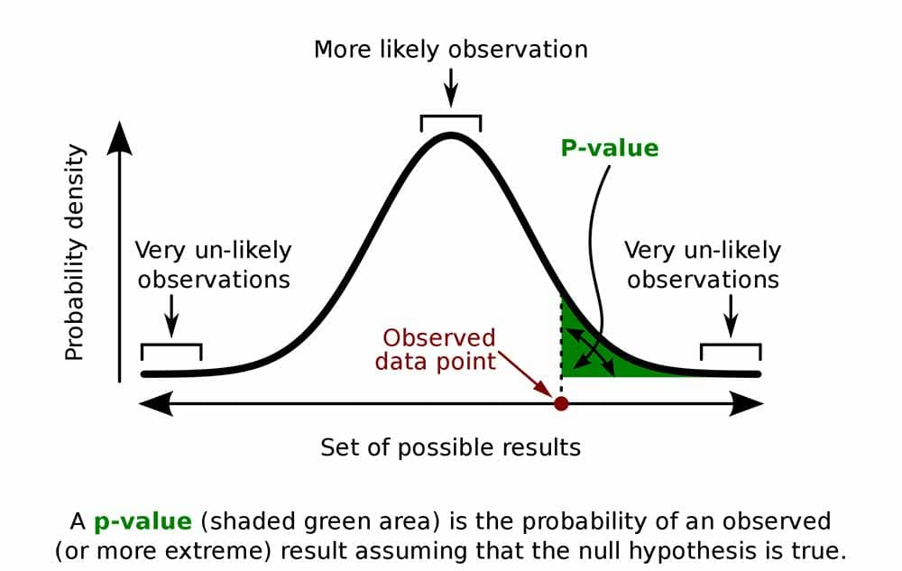
We fail to reject \(H_0\). The data fall short of the chosen evidence threshold.
We reject \(H_0\). The test provides statistical evidence in favour of \(H_A\).
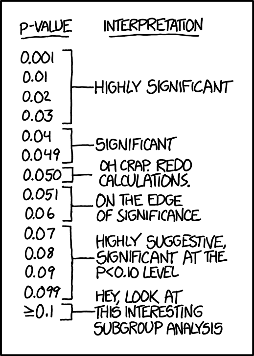
Alternative: the difference is positive. Put all of \(\alpha\) in the right tail.
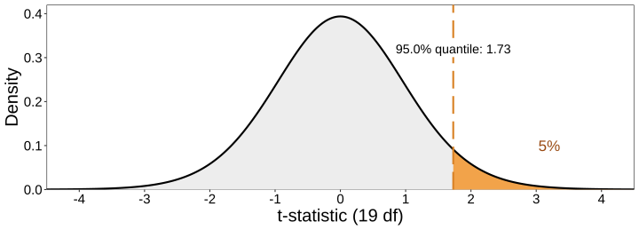
Reject for t-values in the shaded tail. For a negative alternative, use the left tail.
Alternative: the difference can go either way. Put half of \(\alpha\) in each tail.
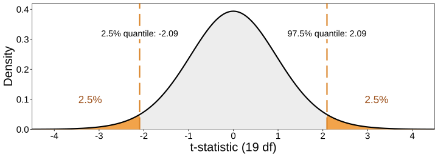
The two shaded tails together still have probability 5% under \(H_0\).
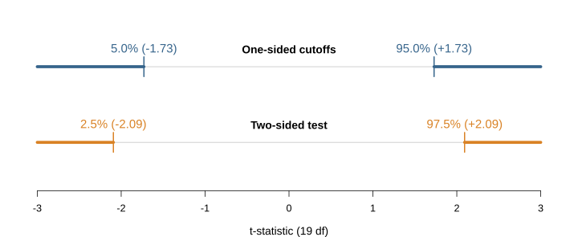
Top row shows the left- and right-sided choices. In R, qt() takes the probability to the left of the cutoff.
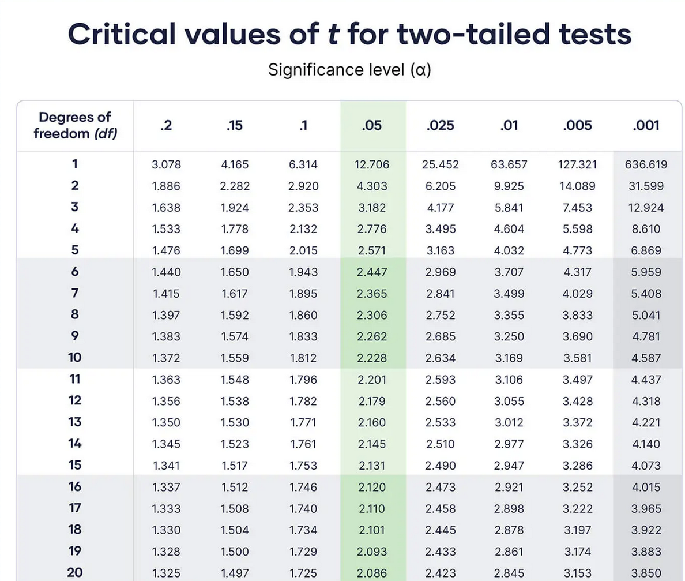
Last time we used an interval to show how precisely we had estimated a mean. Here we look at the interval for a difference in means.
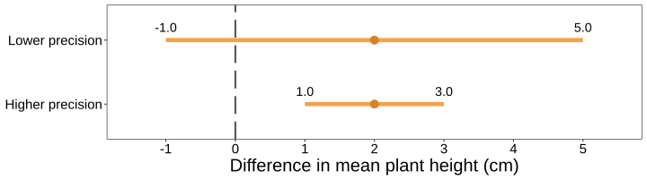
Same estimate, different precision. The narrower 95% CI excludes zero.
For the corresponding two-sided t-test at \(\alpha = 0.05\), reject \(H_0\) when the interval excludes its null value.
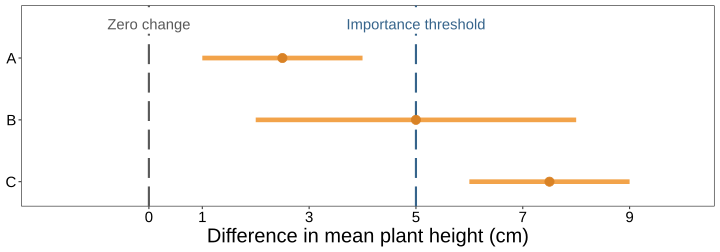
All three intervals exclude zero. Which interval lies entirely beyond the threshold for an important increase?
Suppose the nursery needs a height gain of at least 5 cm to justify extra lighting.
Suppose the tests are independent, every \(H_0\) is true, and each test has a 5% chance of a false rejection.
\(1 - 0.05\) is the probability of no false rejection in one test.
\((1-0.05)^n\) is the probability of no false rejections in \(n\) tests.
\(1-(1-0.05)^n\) is the probability of at least one false rejection.
\[\begin{aligned} 1 - (1-0.05)^2 &= 0.0975\qquad & 1 - (1-0.05)^{5} &= 0.2262\\ 1 - (1-0.05)^{20} &= 0.6415 & 1 - (1-0.05)^{100} &= 0.9941 \end{aligned}\]
Controlling the FWER - probability of making at least one Type I error.
Bonferroni
Holm-Bonferroni
Šidák
Controlling the FDR — expected proportion of false rejections among all rejections, with proportion zero if there are no rejections.
Benjamini-Hochberg
Benjamini-Yekutieli